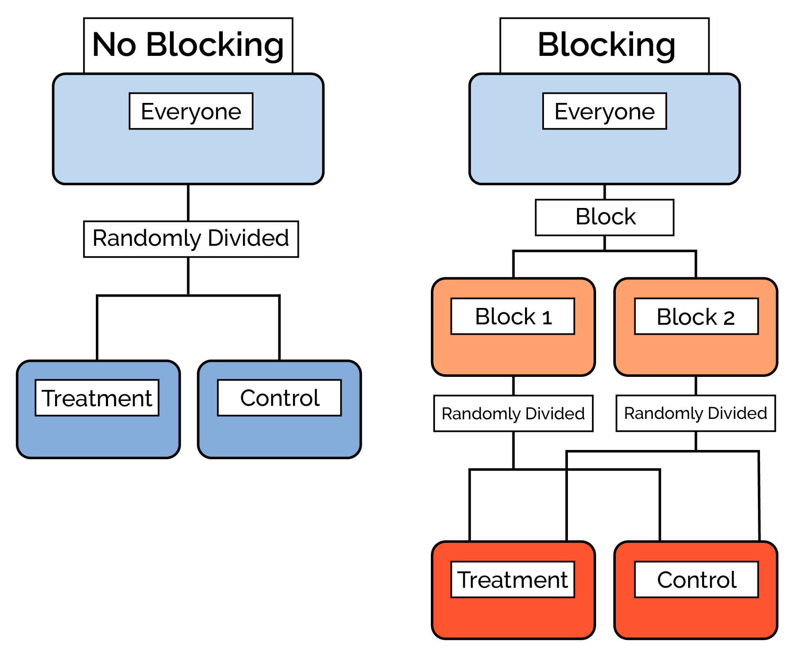
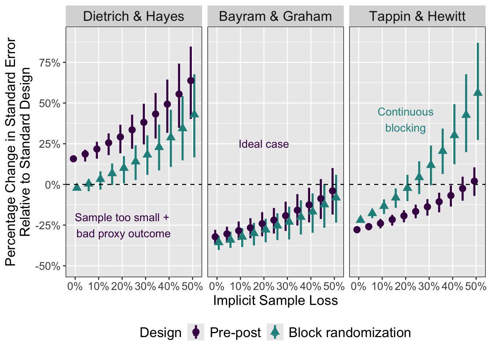
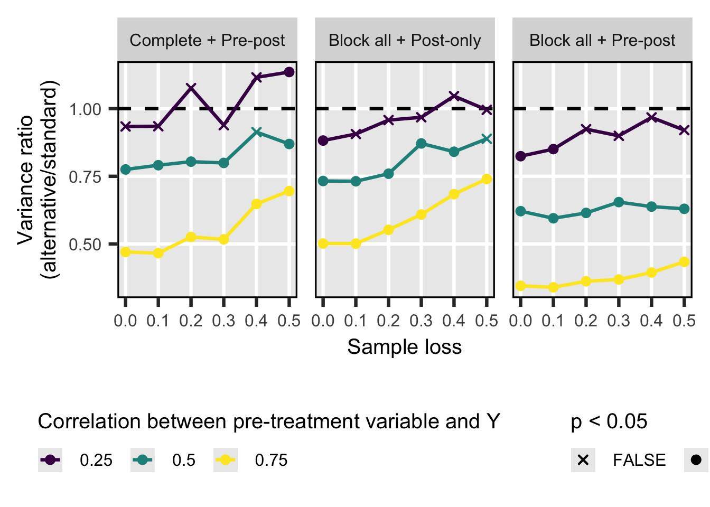
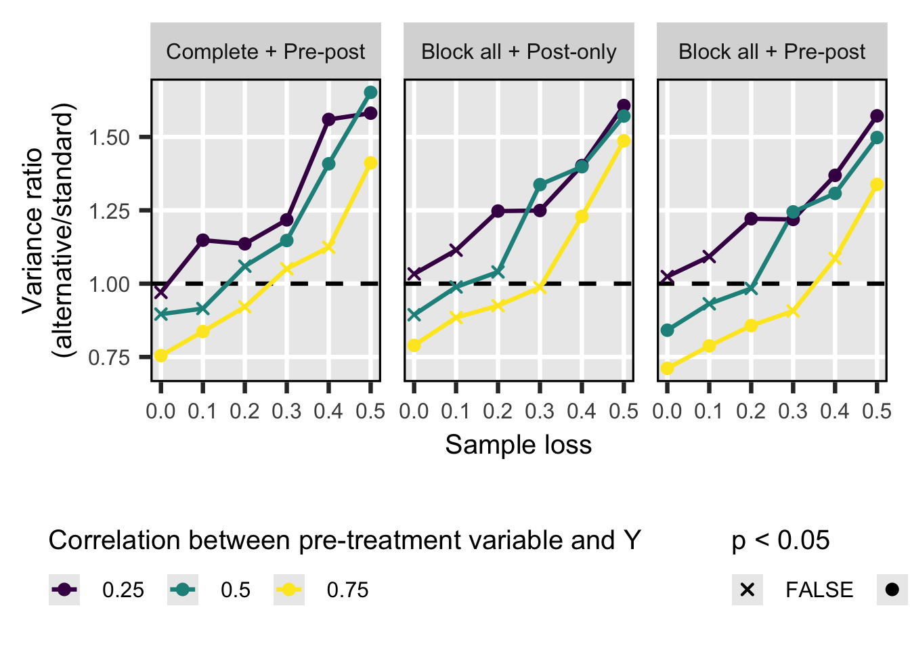
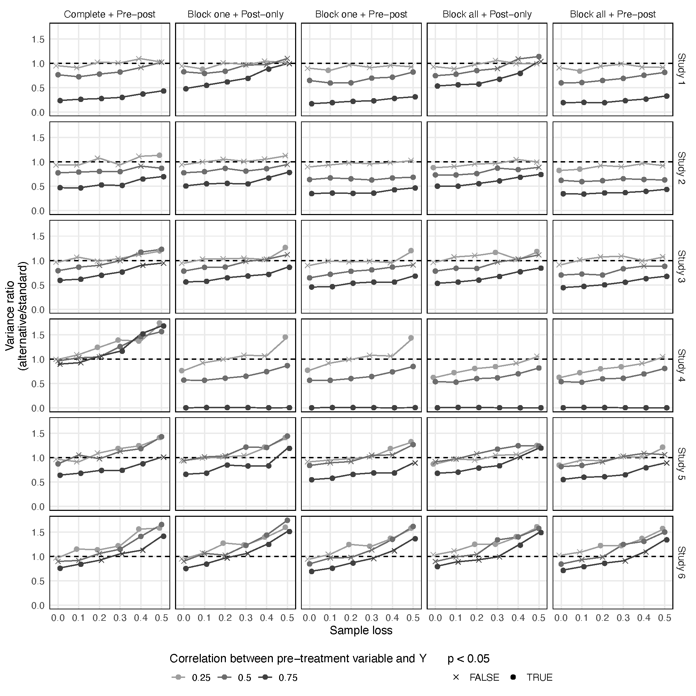
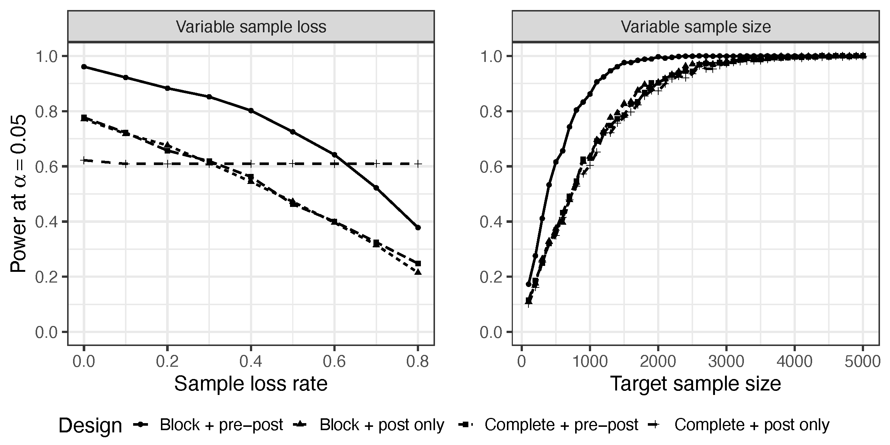
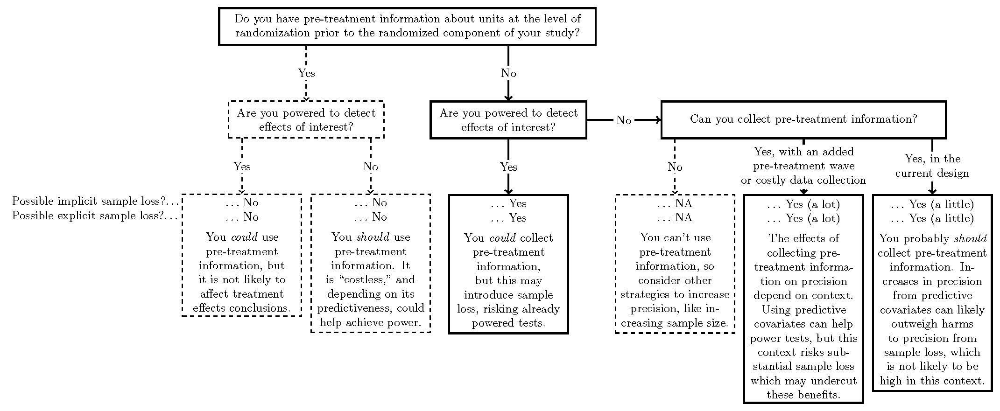

# Standard design
lm(Y ~ Z,
data = data)
# Block randomized
lm(Y ~ Z + block,
data = data)Balancing Precision and Retention in Experimental Design
Additional Materials
Block randomization
Illustration

Estimator
\[\widehat{ATE}_{\text{Block}} = \sum_{b=1}^B \frac{n_b}{N} \widehat{ATE}_b\]
Code
Current use
Based on 2022-23 articles published in APSR, AJPS, JOP, PB, CPS, JEPS.
| N | % | |
|---|---|---|
| Pre-post | 10 | 5% |
| Blocking | 16 | 7% |
| Both | 6 | 3% |
| Neither | Neither | Neither |
| Mention covariates | 169 | 78% |
| Nothing | 15 | 7% |
Full replication results
Studies
| Dietrich and Hayes (2023 JOP) | Bayram and Graham (2022 JOP) | Tappin and Hewitt (2023 JEPS) | |
|---|---|---|---|
| Study | 1 (DH) | 2 (BG) | 3 (TH) |
| Subfield | AP | IR | AP |
| Topic | Race and issue-based symbolism | Support for IO foreign aid | Party cues and policy opinions |
| Arms | 8 | 5 | 2 |
| Obs. | 515 | 1000 | 775 |
| Waves | 1 | 1 | 2 |
| Concern | Hard to reach population | More precision | Effect persistence |
More implementation details

Explicit sample loss
| Study | Design | Starting sample size | All loss | Post-treatment loss | p-value |
|---|---|---|---|---|---|
| Dietrich & Hayes | 1. Standard | 426 | 0.005 (2) | 0.000 (0) | |
| 2. Pre-post | 427 | 0.007 (3) | 0.005 (2) | 0.499 | |
| 3. Pre-post & blocking | 429 | 0.007 (3) | 0.002 (1) | 1 | |
| Bayram & Graham | 1. Standard | 1008 | 0.005 (5) | 0.001 (1) | |
| 2. Pre-post | 1010 | 0.005 (5) | 0.002 (2) | 1 | |
| 3. Pre-post & blocking | 1006 | 0.007 (7) | 0.005 (5) | 0.124 | |
| Tappin & Hewitt | 1. Standard | 752 | 0.130 (98) | 0.125 (94) | |
| 2. Pre-post | 780 | 0.142 (111) | 0.141 (110) | 0.368 | |
| 3. Pre-post & blocking | 767 | 0.207 (159) | 0.132 (101) | 0.702 |
Implicit sample loss

Simulation evidence
Sample
| Study | Article | Type | Arms | N | Country | n | Blocking Covariates | Predictiveness |
|---|---|---|---|---|---|---|---|---|
| 1 | Galasso et al (2023) | Survey | 6 | 2971 | Italy | 946 | 7 | Low |
| 2 | Manekin and Mitts (2022) | Survey | 12 | 3013 | United States | 2784 | 3 | High |
| 3 | Lyon (2023) | Survey | 3 | 1029 | Uganda | 561 | 4 | Low |
| 4 | Goerger et al (2023) | Field | 2 | 2942 | United States | 2712 | 5 | Moderate |
| 5 | Curiel et al (2023) | Field | 2 | 275 | Colombia | 275 | 7 | Low |
| 6 | Simas (2022) | Survey | 2 | 1176 | United States | 1175 | 2 | Moderate |
Designs
Complete + post-only (Standard design)
Complete + pre-post
Block on one covariate + post-only
Block on one covariate + pre-post
Block on all covariates + post-only
Block on all covariates + pre-post
Study 2

Study 6

All

Research design guidelines
Simulation

Flowchart
